Chapter 12
Good practices and approaches for counter UAV system developments – an industrial perspective
1School of Engineering, University of Birmingham, Birmingham, United Kingdom
12.1 Introduction
Radars that can detect and track small targets such as drones are steadily becoming more common with several companies, including Thales–Aveillant, producing radar systems specifically designed for counter-UAS applications [1,2]. The need for these systems has seen a rapid increase due to recent events, including airport and military facility trespassing and attempted assassinations using weaponised drones. The number of drone incidents involving near-misses with aircraft has reached an all-time high with around 120 reports in 2018 alone in the United Kingdom [3]. Radar still seems to be the most tried and tested method of detecting, tracking and classifying this relatively new class of targets, but other methods exist that can aid the radar in detecting and classifying. To detect these small targets, a radar system requires a greater sensitivity than conventional radars as drones typically have a Radar Cross Section (RCS) that can be much less than 1 m2. By increasing the sensitivity, there are a greater number of ‘confuser targets’ detected compared with traditional Air Traffic Control radar systems. The pertinent example of a confuser target is birds that have a similar airspace occupancy and RCS to drones, and hence there is a need to discriminate between these two target classes; otherwise, the radar output would become completely congested with airborne targets.
Staring radar is an important design choice for non-cooperative drone surveillance as it is able to provide the high sensitivities and high Doppler resolutions that are necessary to detect and track drones. This is due to drones having a low RCS and flying at relatively low velocities and altitudes [4] making them challenging air targets. The high-sensitivity requirement means that other slow-moving targets with a low RCS, such as flying birds and ground targets, are also detected. These (non-drone) targets are dubbed ‘confuser targets’ from a drone surveillance system perspective. Consequently, the operator and a supporting secondary system (e.g., optical or RF-based) can be easily overwhelmed if they must analyse or interrogate all objects. Therefore, to be useful and reliable, drone surveillance radars must possess accurate classification techniques to ensure that birds and other confuser targets do not provide false drone detections and the system does not misreport the actual drones. Accuracy is the crucial factor in assessing the performance of these counter-drone systems; a false positive means that costly countermeasures to find and neutralise the intruding drone will occur in vain, and a missed drone report could potentially lead to catastrophic damage, especially in high-risk areas such as airports or stadiums.
Several strategies have evolved for classifying drones using radar systems with supervised learning classifiers proving to be particularly attractive [5]. Supervised learning classifiers are reliant on accurately labelled training data. For drone classification, this is particularly challenging given the large volume of opportune non-drone targets (primarily birds) that are likely to be encountered in the data for wide-area surveillance sensor systems. Data from control drone trials is often used as the means to generate labelled training data for the drone class but for confuser targets, in particular birds, reliance has to be made on measurements for opportune targets which are less reliably labelled. Some approaches have been devised for the labelling of bird opportune targets [6]. There has also been a proposed method that can assess classification performance without the need to label non-drone targets explicitly [7]. However, fundamentally, supervised learning methods will benefit from more accurately labelled data and will improve classifier accuracy. Drone versus non-drone classification requires the ability to obtain more accurately labelled data for bird targets. Looking to the future of radar target classification with machine learning techniques, having access to plentiful high-quality training data will help push this frontier further into the deep learning regime, where very large datasets are required to optimise the huge dimensionality of hidden layers in a multilayer perceptron network, for example.
Truth data can come in many forms with one of the most accurate and convenient being GPS. For all target classes, GPS can be used to provide positional data with an uncertainty that is typically much less than the radar’s resolution, especially if the radar is operational at ranges of the order of several kilometres. Specific trials can be conducted to collect data from aircraft and drones just by attaching almost any GPS device to them [8] or by using the built-in GPS logger that often comes embedded in commercial drones. Using specialist GPS equipment, trained birds can also be used to collect data but there can be a limit to the breed of birds and the behaviour exhibited due to their captivity. Ideally, there is a requirement for a GPS-free system that can collect data that can be compared with the radar echo history to provide class labels of the radar tracks. This system would not necessarily require a definitive 3-D position but could be an observer on the ground providing their position and orientation to a target along with the target class label which would be enough to relate it to a recorded track. This system could be used for any opportune target that presented itself during a trial such as birds, aircraft and ground targets. This system would also be easy to use and have little opportunity for human error which could corrupt the training data and lead to inaccuracies in the classifier.
In this chapter, we briefly describe the staring radar concept and show how it can be used to detect and discriminate drones against a severe background of other targets such as birds and ground clutter. The methods developed for collecting ground-truth data from both control and opportune targets are described. Throughout, examples from real-world measurements will be used to illustrate how to generate labelled training data as well as demonstrating the target recognition performance with a supervised learning-based approach.
12.2 Robust drone classification with a staring radar
Aveillant’s Gamekeeper 16U staring radar system is designed for the surveillance of Unmanned Aerial Vehicles (UAVs) and is the sensor used to collect and test the methods presented in this chapter. The transmitter of the Gamekeeper radar produces a broad beam that illuminates the entire search volume continuously over time, while the receiver is comprised of a 2-D planar array that is digitised at the element level to allow the radar to generate multiple simultaneous receiver beams that cover the entire search volume. With this fixed arrangement of beams and a long integration period, the sensor is able to achieve a fine Doppler resolution enabling the capture of micro-motion signatures, such as those produced by the small spinning rotors of a micro-UAV. The radar provides raw IQ data as well as tracked outputs from the real-time processor. Figure 12.1 shows an image of the Gamekeeper 16U radar installed at the University of Birmingham, the operating parameters of which are listed in Table 12.1.
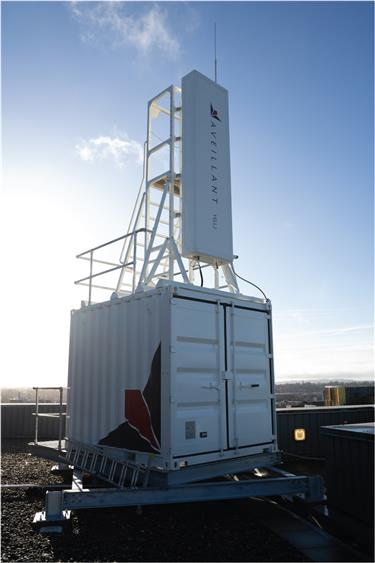
Figure 12.1 Aveillant’s Gamekeeper 16U installed at the University of Birmingham Campus
Table 12.1 Gamekeeper L-band multi-beam staring radar system parameters
| Parameter | Value |
|---|---|
| Frequency | L band |
| Bandwidth | ∼2 MHz |
| Transmit power | ∼2 kW |
| Receiver channels | 4×16 |
| Azimuth coverage | 90° |
| Elevation coverage | 30° |
| Pulse Repetition Frequency (PRF) | ∼7.5 kHz |
| Update rate | ∼0.25 s |
| Polarisation | Vertical |
| Drone detection range | 5 km |
Raw radar data is processed to detect and track targets. The classifier follows and uses a multitude of features for target recognition, including the tracker calculated trajectories and potentially the Doppler spectrum of a target. Some target classes are easier to discriminate, for example, aircraft and drones. The differences between these two are seen in almost every feature evaluated as aircraft generally fly much faster, higher and have a considerably larger RCS compared with drones. Propeller-powered aircraft also produces a greater range of micro-Doppler components as they typically travel at greater radial velocities compared to the velocity of a drone’s propellers. The real classification challenge comes in the form of discriminating between birds and drones as there is little separability between individual feature values. They both fly slowly, have small RCS values and fly at low altitudes. Micro-Doppler components, arising from the motion of propeller blades, have shown to aid the classification of small targets [2,9]. However, classification performance using this metric alone is limited as the stand-off range at which propeller return can be detected is dependent on echo strength, which can be 10–30 dBs less than the drone body echo strength. Due to the similarities between echoes from drones and birds with no clear singular feature to tell them apart, there is a need to search for combinations of features that together create a high performing and robust classifier. Further, there can be more than one set of features used to classify each of these targets at any one time. One approach is to use a Decision Tree (DT) classifier which uses a priori known characteristics of targets; for example, a ground target will be classified as such if its detected location is close to ground level [2,10]. Due to the complexity of this form of classifier, it can also be beneficial to use a machine learning algorithm to build the DT. This uses a set of accurate training data collected from real radar data along with the correct class labels of each of the targets to be considered. Accurate class labelling of this training file also requires accurate truth data to be collected. This is where lies the limitation of the practical implementation of such classification algorithms. The following sections describe methods for obtaining good truth labelling from field trials for both control test targets and targets of opportunity.
12.3 Methodology for ground truthing
The first stage of creating a machine learning classifier is to collect training data with accurate labelling. For control targets, such as drones and aircraft, labelling can be achieved using GPS track association. This uses an algorithm to compare the GPS truth data with any radar track that appears within a set volume of space around the truth track and has a similar velocity and heading. Section 12.3.1 discusses the approach for ground truth with control targets and presents example results from test targets, including drones and birds. For opportune targets, a whole new method has to be created due to information from GPS not being routinely available. These methods are described in detail in Section 12.3.2.
12.3.1 Control targets
12.3.1.1 Drones
Drone surveillance radar is a growing area of research and development motivated by the increasing numbers of drones and their constant improvement and usability. Modern drones are highly configurable in their trajectories, and more advanced drones are getting cheaper all the time due to their constant development. There are many applications and programs that can provide the end-to-end functionality of planning a flight route/path and recording the GPS data. A popular application for controlling and recording the flight is ‘Litchi’ [11] which is compatible with DJI-branded drones. This was the choice for the trials described in this section, although alternatives certainly exist. The drone used in the trials reported here is shown in Figure 12.2. It is possible to extract the on-drone GPS output as a comma-separated value file or a formatted table. Such a table can also contain many potentially useful fields, including, for example, latitude, longitude and altitude information with timestamps over the duration of its flight.
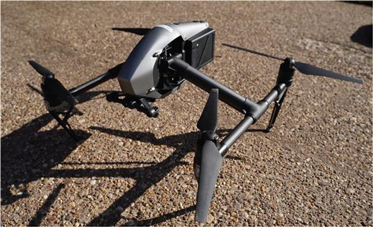
Figure 12.2 The quadcopter DJI Inspire 2 drone used in the field trials presented in this chapter
Possessing the truth data of the drone flight is an enabler for generating labelled data for machine learning methods. There are a couple of methods to use this data effectively to provide labels to a tracker output, the choice of which will depend on the nature of data that is required for a given machine learning architecture. If DT architecture is to be trained, then a comparison of the tracker output can be made with the truth trajectory, and the track ID produced by the radar will now have a correct label at all points of its trajectory. See Figure 12.3 for a comparison of the truth data and a tracker output. Note the seemingly erratic nature of the radar-derived locations information. This is quite typical and is simply a function of the parameters of the radar measurement system and an additional characteristic that a classifier has to cope with. Direct comparison between truth and tracks can be used to test the integrity of the tracker, which is useful to check, especially near the far edge of the radars instrumented range. With radar tracks now corresponding to the drone class, the information is there to package this data into a machine-learning algorithm. Figure 12.4 shows different views of a drone truth trajectory. This information may be used to produce spectrograms of the drone for the duration of the track. This is done by plotting just the Doppler axis of the radars 4-D data cube (aperture row×aperture column×range gate×Doppler bin) where the target is located. Stacking the Doppler axis along time shows the dynamics of the drone’s radial motion and is the best way, pictorially, to show the effects of the rotary wing drones’ blades micro-Doppler returns. An example of this is shown in Figure 12.5. The classification of radar targets using these spectrograms via a convolutional neural network classifier shows promising results [12].
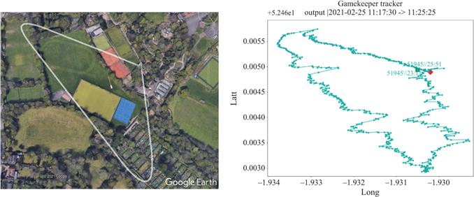
Figure 12.3 (Left) DJI Inspire 2 rotary drone GPS truth displayed in Google Earth, (right) the extracted tracker output of the radar, including ID number and timestamps
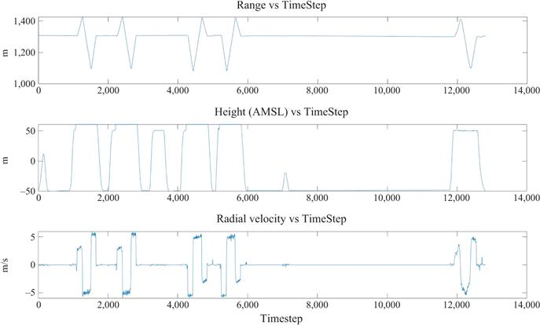
Figure 12.4 Target trajectory features obtained from GPS truth – DJI Inspire 2 rotary drones. AMSL stands for average height above mean sea level
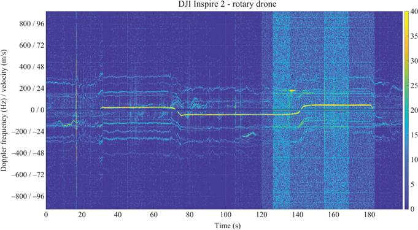
Figure 12.5 DJI Inspire 2 rotary drone spectrograms. At times after 120 s, the background noise detected by the radar increases drastically. The most likely cause of this is from the tracked target entering a new resolution cell that experiences a higher level of clutter
12.3.1.2 Birds
Whilst there has been some work on radar measurements using control trials with birds at short range [13], there has been very little research involving control bird trials at longer ranges for high-resolution Doppler measurements and/or measured trajectory data. Here we describe an experimental technique for obtaining radar data for trained birds that are equipped with GPS tags to provide accurate tracking information that will facilitate precise data labelling.
Control flights with birds require a lot of specialist knowledge and specific equipment to ensure that the welfare of the birds is not compromised whilst also ensuring that accurate tracking data is obtained to support the analysis and interpretation of the sensor data. In the experiments, each bird was deployed with a Microsensory Radiotracking GPS tag which was affixed to the tail feathers of each bird prior to a test flight and removed after the return of the bird to its handler. This tag provided high-accuracy GPS tracks of the control bird targets. Figure 12.6 shows an image of the GPS tag attached to the back of a Common Buzzard (Buteo buteo).
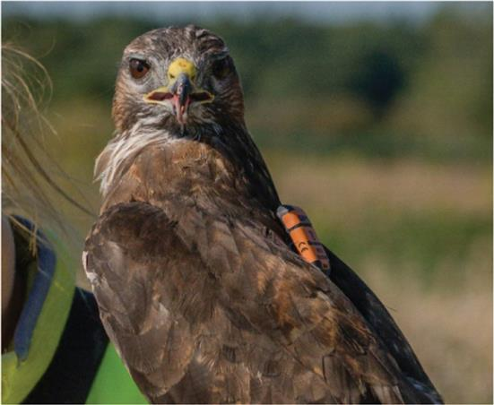
Figure 12.6 Microsensory GPS tag affixed to a Common Buzzard
Field trials were conducted at an ex-RAF Airfield with a number of birds of prey. This location provided a rural environment with flat terrain, low-lying vegetation and wide-open areas for flying birds in good visibility surroundings. Four species of raptors were used as control targets: an African Peregrine Falcon (Falco peregrinus) (body mass: 720 g), a Saker-Gyrfalcon (Falco cherrug × Falco rusticolus) Hybrid (900 g), a Common Buzzard (700 g) and a Harris’s Hawk (Parabuteo unicinctus) (900 g). Each bird was flown multiple times by professional handlers approximately 1 km from the radar, along its boresight. The Common Buzzard and Harris’s Hawk both flew from handler to handler very close to the ground. The Peregrine Falcon flew multiple figure-of-eight patterns, climbing in altitude and diving to intercept a lure operated by a handler. The Gyrfalcon Hybrid flew at the highest altitude, while chasing a small handler-operated drone which allowed it to be easily detected by the radar. Figure 12.7(a) shows the image of the Gyrfalcon Hybrid together with an example of GPS track from the tag.
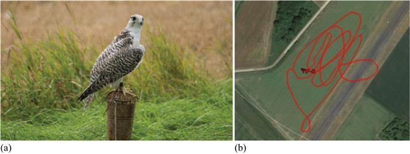
Figure 12.7 (a) Gyrfalcon Hybrid, (b) GPS track from control flight
The truth data from the GPS tag can then be analysed to evaluate the trajectory profile. Figure 12.8 plots a number of trajectory features obtained from the GPS truth data collected for the Gyrfalcon Hybrid. The GPS data was recorded at 1 Hz and it was interpolated to match the timestamp of the radar tracker output which had a time-step duration of 279 ms. From these plots, it can be seen that in this instance the bird climbed up to a height of about 70 m and then descended back to ground. The bird was circling while it was ascending and descending, and this can be seen from the plot of its slant range and the radial velocity along the line-of-sight of the radar. Similar to the GPS truth data from control drone trials, the GPS truth data from the bird target can be used to label the radar tracker ID and this can be used to generate a Doppler spectrogram for the bird from the raw radar data.
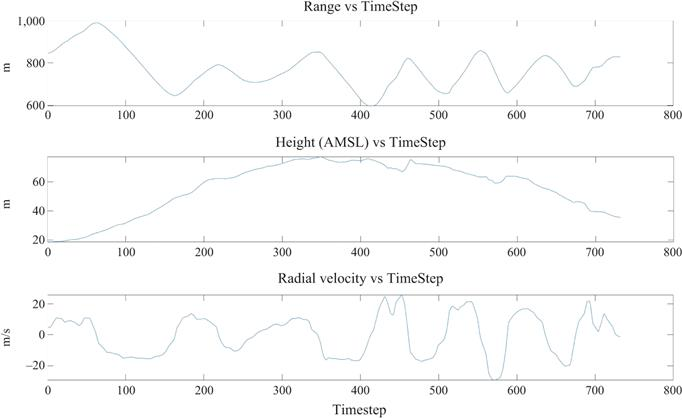
Figure 12.8 Target trajectory features – Gyrfalcon Hybrid bird
Figure 12.9 compares the GPS truth with the radar tracker output (top image) along with the spectrogram obtained from the raw radar data using the information from the GPS truth. There are a couple of observations to be made here. First, the radar track is nosier than the GPS truth which is to be expected given the coarse angular resolution of the radar. Second, in the spectrogram the bird body Doppler is exhibiting rapid changes, which is understandable as the bird was circling during this test flight. However, there are also some Doppler sidebands that repeat throughout in frequency. These are due to an artefact of the radar that was present during this trial and not related to the target signal in this instance.
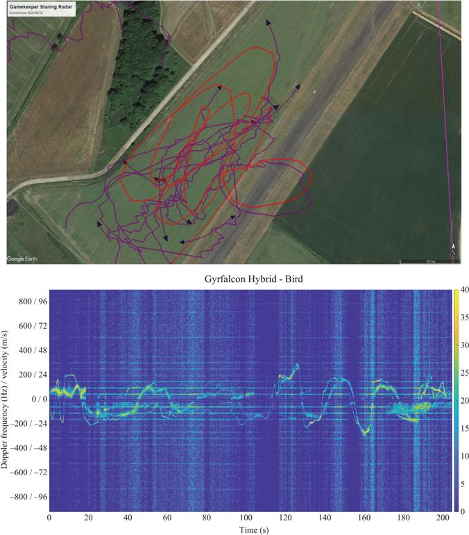
Figure 12.9 (Top) Gyrfalcon Hybrid bird GPS in red overlaid onto the radar tracker output shown as purple lines (bottom) Doppler spectrogram
Figure 12.10 shows a plot of the measured Signal-To-Noise Ratio (SNR) of the Gyrfalcon Hybrid obtained from the test flight. The radar measurements show that the average SNR of the Gyrfalcon Hybrid was approximately 40 dB but varied significantly over the course of the flight due to the bird changing direction and height above ground. The measurement campaign was a useful demonstration of undertaking control bird flights and successfully collecting radar data in an open rural setting, thus providing a limited means of extending the all-important air truth information.
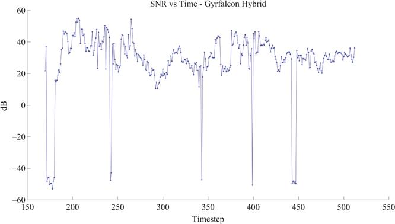
Figure 12.10 Gyrfalcon Hybrid bird SNR
However, with all control targets there remain significant limitations in terms of the volume and variety of data that can be collected. For example, the birds were only able to perform a maximum of three flights in the whole day with rest periods being allowed between flights. Furthermore, the birds were specially trained to conduct precise flight profiles which are not truly representative of their natural flight. Therefore, for more representative data of bird targets, it is important that training data is collected for birds in their natural habitat which necessitate being able to use data from targets of opportunity and this is addressed with the technique described in the following section.
12.3.2 Targets of opportunity
The dichotomy of birds and drones in regard to truth data collection is stark. On the one hand, drones are ideal test subjects for radars, with their controllability and often in-built GPS trajectory recording abilities, but are somewhat effort intensive to fly and set up. Birds on the other hand are tracked in great numbers and at nearly all times for a radar system with a long-range and a maximum altitude of detection. The radar installed at the University of Birmingham captures ∼2,500 tracks every 10 min during the day. Some tracks are ‘phantom’ but can be mostly filtered out by removing extremely short or fast tracks, or ones that are at zero-radial velocity throughout their existence. However, providing truthing and/or labels for these related radar tracks is not easy. Getting accurately labelled truth data requires either sourcing bird handlers to join a trial and provide the birds and specialist GPS trackers, or alternately to somehow label the free bird tracks reliably. The first of these options can be undesirable as they rely on external experts, cost, transportation, organisation, etc. Additionally, as staring radar looks to engage more challenging environments such as deployment in urban/city areas, having access to large areas of open space to conduct bird of prey trials cannot be guaranteed (admittedly, drones truthing shares this same detriment as restrictions on drones in residential areas ever increase). There are also valid concerns that the trajectories flown by birds of prey will not necessarily train a classifier network well to deal with smaller urban birds such as pigeons or magpies. With these realities in mind, this section will demonstrate a method for converting free, opportune bird tracks into accurately labelled radar data to support classifier performance and progress.
The method used in this case records an observer position and orientation towards the specific target by utilising an iPad tablet and the Theodolite application [14]. Other software is capable of carrying out this task, including Dioptra or Solocator [15,16]. This combination allows an observer to use the iPad camera to capture an image of the opportune target and input, via a custom note, the targets class label, e.g., bird or, ideally, a type of bird. The image was then saved to the tablet by the application along with Exif/meta-data stored within the image. This meta-data contained all the positional and orientation information of the tablet at the time the image was taken using the device’s accelerometers and wireless systems. This information includes the time, GPS position, altitude, bearing angle, elevation angle as well as the custom note input by the observer containing the class label. Once proficient in the use of the tablet, an initial measurement of a target could be recorded in less than 5 s with consecutive measurements taken every second due to the application saving the last entered custom note class label. After the first measurement, a target and related ground-truth information could be recorded at a typical rate of 1 Hz.
After all the ground-truth data had been recorded as a compilation of images, they are easily transferred to a computer for comparison with the radar tracks. An example of a captured image used to verify a track is shown in Figure 12.11. A simple script then extracts the meta-data from each image and creates a KMZ file for viewing on the Google Earth. Each measurement taken is displayed at the exact time of capture by first plotting the position of the tablet, using the GPS position and altitude and then projecting a line in the direction of the target by using the bearing and elevation angles. Each line is then associated with the extracted image data and given the name of the custom note input by the observer. This provides a visual check that the note input by the observer corresponds to the captured image.
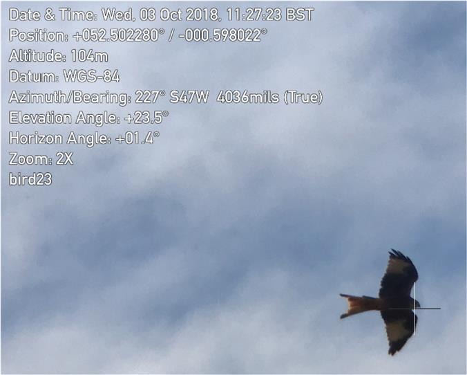
Figure 12.11 Opportune bird target ‘bird23’ captured using tablet and application overlayed with tablet sensor data
The custom note also allowed for a navigable folder structure as this string of characters is also analysed in the same script. For instance, if the observer had input a custom note of ‘bird23’ where the numbers ‘23’ corresponded to the 123rd opportune bird target observed, then each image with the custom note ‘bird23’ could be put into a folder which corresponds to all the measurements taken of the same target. This folder is then also put into a folder along with any others containing the same string of ‘bird’. All this information is contained within a single KMZ file and is subsequently easy to associate with the radar tracks once converted into a Google Earth format.
An example of an opportune bird target with ground truth compared with the radar track is shown in Figure 12.12. This method of providing ground-truth data of an opportune target was an improvement on traditional methods that are fraught with the possibility of human error. The new method has allowed for a greater number of radar tracks to be given a class label, significantly improving classifier training. In addition to its main function, the tablet provides a range of applications such as a view of the live display of the radar output for monitoring targets in the field. This acts as an early warning system for the observer to prepare for approaching targets before they are directly visible.
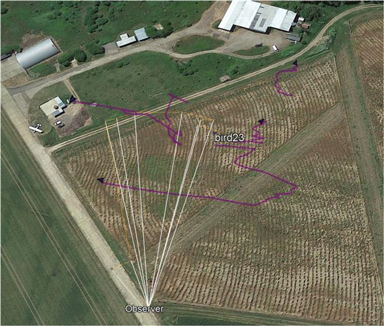
Figure 12.12 Opportune bird target ‘bird23’ images displayed on Google Earth showing orientation lines correlating with a radar track
To indicate the degree of improvement made to the ground truthing, compared to predecessor methods, an opportune target measurement took over a minute to record (due to the number of separate measurement devices). This has now been hugely improved to a rate of 1 Hz, greatly improving utility. The previous method utilised handwritten logs which were transferred manually onto a computer to generate a KML file. Hence, the reliability of target measurement was lower due to possible human error in making inputs and the longer recording time resulting in fewer target track associations and their labelling.
12.4 Ground-truth results for drones and birds
The ground-truthing method described in the previous section was used to provide labelling of real radar tracks obtained from measurements carried out at the trial site based in Deenethorpe, Northamptonshire, United Kingdom. Gamekeeper radar data was collected for several control targets flights using a DJI Inspire drone. The radar data was processed, and the tracks exported to Google Earth, which were then cross referenced against the ground-truth information and track IDs were registered corresponding to drone and bird targets. Figure 12.13 shows a selection of tracks that were labelled in this manner.
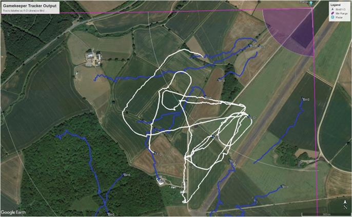
Figure 12.13 Radar tracks labelled as bird (blue) and drone (white) using the truthing method
The track labels are then used to extract trajectory-based features from the radar track data. The trajectory information is also used to generate spectrograms of tracks from the raw radar data. Figures 12.14 and 12.15 show the labelled trajectories and spectrogram for two targets, labelled using the procedure adopted here. Figure 12.14 shows a drone with its distinct micro-Doppler signatures clearly visible. In Figure 12.15, the target is a bird and whilst there is evidence of some very faint Doppler sidebands, they exhibit a lack of periodicity and are quite different in character from that of the drone. The labelled trajectory data is used in the machine learning classifier. Previously work used a far less reliable process of labelling unknown tracks of opportune targets which would limit the ability of the machine learning classifier to utilise labelled data from opportune targets [4].
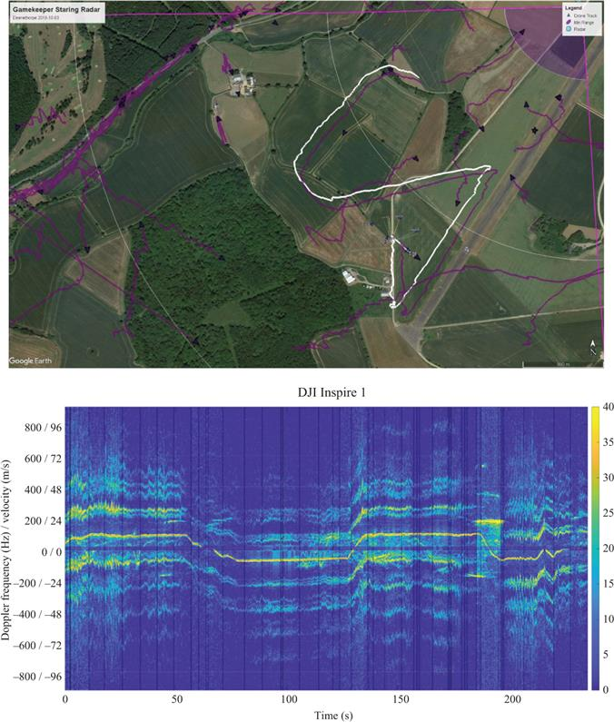
Figure 12.14 (Top) Radar tracks with a selected tracked (ID 126795) labelled as drone; (bottom) spectrogram for track ID 126795
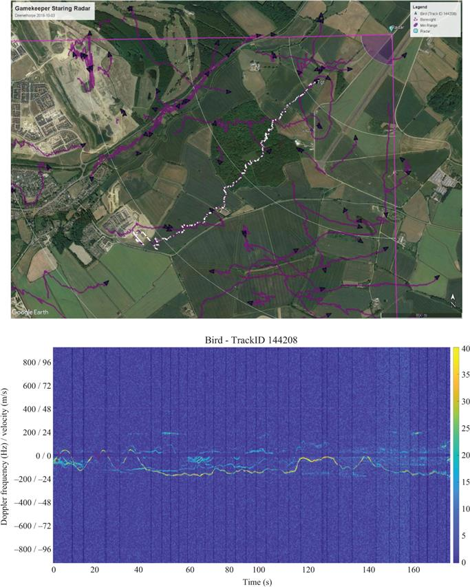
Figure 12.15 (Top) Radar tracks with a selected tracked (ID 144209) labelled as bird; (bottom) spectrogram for track ID 144208
12.5 Machine learning classification
Once radar, truth and ground-truth data had all been recorded, the next stage was to create an accurate classifier for the radar system. The results presented in this section are to be taken as an example. Extending the capabilities of the classification procedures used in the following is an active area of research [5]. Several approaches have been developed that utilised either trajectory-based features [17] or micro-Doppler features [18] or a combination of both [10] for discriminating drones from non-drones. Furthermore, these techniques are based both on standard feature-based classifiers as in [9,19] and those that use deep learning for discrimination as reported in [18]. Here we restrict the choice of a classifier to a DT classifier as the main motivation is not the absolute performance but the ability to understand the utility of the truth labelling performed with the method outlined in the previous section. A key motivation of employing a DT classifier is that the learned features are transparent and physically meaningful.
The DT classifier is based on supervised machine learning. To use machine learning, a training file was created using truth data collected from drones consisting of samples of tracked targets collected from the radar and containing the parameters recorded of each feature. The classifier simply has two classes: (i) drone and (ii) non-drone. Each sample requires its class label to be recorded. This allows the machine learning algorithm to find any differences between the collective class features and hence enables discrimination. This is done either using a feature on its own (unlikely for drones and birds) or by combining features together to create a case-by-case classifier.
Features that the classifier selects need to avoid over-tuning to the training data, commonly known as overfitting. For instance, if trials were conducted in a particular region and the x–y position was used, then the classifier could determine that only a target of a particular class would appear in that region. In avoidance of this, the classifier is only allowed to use the positional feature of height. Derivatives of position are used such as velocity, acceleration and jerk as well as the number of micro-Doppler components associated with a target. In addition to the instantaneous features, statistical analysis over a rolling window is used to analyse the feature history of a target. The mean, minimum and maximum of features are used. In total, 13 features were used which included features such as the age of the track and the target RCS with the number of Doppler components being the most significant feature.
The DT classifier was created in MATLAB® using the fitctree function from the ‘Machine Learning and Statistics’ toolbox. This function called for a 1-D array of class labels relating to each sample and a 2-D array containing the feature parameter values for each sample with each column relating to a different feature. These arrays were both extracted directly from the training file and the function would then use these arrays to produce a DT classifier. It also allowed for the option of k-fold optimisation and pruning to prevent over-fitting to the provided training data. The output consisted of a 2-D array of the DT parameters with each row relating to a node and columns for node number, positive child node number, negative child node number, feature used, split value, data size and majority class.
A typical result from a machine-learned two-class drone DT is shown in Figure 12.16 along with the associated confusion matrix. Class 1 (blue) is the non-drone class and Class 2 (orange) is the drone class. The classifier was trained on 81k data points. The test was performed on nearly 10 min of radar output tracks from data not included for training. This shows a correct classification for drones to be 94.3% and a false-positive rate of 0.5%. This result shows what is potentially possible; even with a limited set of training data, the classification model is still flexible enough to provide similar results for multiple drone models and separate radar sites.
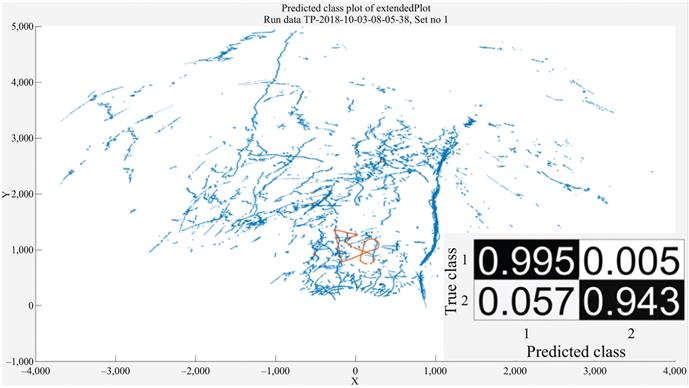
Figure 12.16 Typical results for a machine-learned decision tree classifier showing the non-drone (Class 1 blue) and drone (Class 2 orange) class with confusion matrix
A DT classifier can also be produced to include more than two classes and is only dependent on the training data labelling supplied. If DT only discriminated between two classes such as drones and non-drones as in this case, then the radar classification algorithm could also use another two-class DT classifier of bird and non-bird in parallel to add in this class to enable it to be a multi-class classifier. The process of creating a classifier using this method can easily be automated so a new classifier can be produced whenever needed. This could be when new specific class data needs to be added due to it falling outside previous class feature parameters or if changes were made to either previous stages of the radar system’s algorithm chain or to the hardware. This could result in even a small parameter change to propagate through to the classification algorithm and result in classification error.
12.6 Conclusions
In the modern day with an acceptance of machine learning techniques as a method to getting superhuman performance in areas of classification and regression, ‘big data’ or ‘data science’ is an area rapidly expanding all over the world. A radar, and in particular staring radar, produces massive amounts of data, more than could ever be interpreted by a human even if assuming a perfect tracker display and user interface. The challenge is clear to radar engineers to capitalise upon the explosion of machine learning techniques of today and tomorrow. However, to be effective in this approach, bigger and more complex machine learning algorithms that are suspected to achieve an improvement in classification performance will require ideally excess amounts of accurately labelled training data to be fully explored.
In this chapter, we presented an approach to quickly and accurately collect ground-truth experimental data of targets of opportunity, mostly birds, recorded at radar drone trials. This method enables the recording of accurate information on these targets of opportunity and compares them with the radar output to provide a greater number of class labels to be associated with the radar tracks. The combination of the tablet and applications detailed in Section 12.3.2 allows for measurements to be recorded quickly and accurately with a low opportunity of human error input. This then allows for better and more complex classifiers to be created using machine learning by providing more accurate and significant training data. The ground-truth techniques have been deployed in a number of studies of drone surveillance to provide more effective labelled data for the training and validation of machine learning classifiers, examples of which include the SESAR CLASS Live Experiments for U-Space tracking of drones [20,21] and the SESAR SAFIR live demonstration of drone traffic management capabilities in urban areas [10,22]. Future work will compare results showing the effects of limited truth data versus the more complete set that can now be collected with the method detailed in this chapter.
Acknowledgements
The authors wish to acknowledge and thank the many people who have been involved with the development of staring radar and especially its application to drone surveillance. The authors are very grateful to Thales–Aveillant who manufacture the Gamekeeper radar for their assistance with field trials and making the data available to support the analysis. Furthermore, the authors would also like to acknowledge the contribution by the International Centre for Birds of Prey (Newent, UK) for the arrangement and operation of the captive birds in the field trials with birds of prey.
References
[1] Oswald, G.K.A., “Holographic surveillance radar”, In the Proceedings of SPIE 7308, Radar Sensor Technology XIII, 73080D, 29 Apr. 2009.
[2] Jahangir, M. and Baker, C.J., “Robust detection of micro-UAS drones with L-band 3-D holographic radar”, In the Proceedings of the Sensor Signal Processing for Defense, Edinburgh, UK, Sep. 2016.
[3] “Airprox involving UAS Drones”. In: (2018). https://www.Airprox board.org.uk/Reports-and-analysis/Statistics/Airprox-involving-UAS-Drones/.
[4] Jahangir, M., Baker, C.J. and Oswald, G.K.A., “Doppler characteristics of micro-drones with L-band multibeam staring radar”, In the Proceedings of the IEEE Radar Conference, Seattle, WA, US, May 2017.
[5] Taha, B. and Shoufan, A., “Machine learning-based drone detection and classification: state-of-the-art in research”. IEEE Access, 2019. DOI: 10.1109/ACCESS.2019.2942944.
[6] Sim, J., Jahangir, M., Fioranelli, F., Baker, C.J and Dale, H., “Effective ground-truthing of supervised machine learning for drone classification”, In Inter. Radar Conf. 2019, Toulon, France, Sep. 2019.
[7] Jahangir, M., Ahmad, B.I. and Baker, C.J., “The application of performance metrics to staring radar for drone surveillance”, In EuRAD 2020, Utrecht, The Netherlands, Jan. 2021.
[8] Jahangir, M. and Baker, C.J., “Characterisation of low observable targets with a multi-beam staring radar”, In IET Radar Conference, Belfast, UK, Oct. 2017.
[9] Molchanov, P., Egiazarian, K., Astola, J., Harmanny, R. I. A. and de Wit, J. J. M., “Classification of small UAVs and birds by micro-Doppler signatures”, In EuRaD2013, Germany, Oct. 2013.
[10] Jahangir, M., Ahmad, B.I. and Baker, C.J., “Robust drone classification using two-stage decision trees and results from SESAR SAFIR trials,” In Proc. of the IEEE International Radar Conference (RADAR), 2020, pp. 636–641.
[11] https://flylitchi.com/Autonomous flight app for DJI drones for Android and iOS. Accessed March 2021.
[12] Dale, H., Baker, C.J., Antoniou, M. and Jahangir, M., “An initial investigation into using convolutional neural networks for classification of drones”, In 2020 IEEE International Radar Conference (RADAR), Washington, DC, USA, 2020, pp. 618–623, doi: 10.1109/RADAR42522.2020.9114745.
[13] Rahman, S. and Robertson, D.A., “Radar micro-Doppler signatures of drones and birds at K-band and W-band”. Sci Rep 8, 17396, 2018.
[14] https://apps.apple.com/gb/app/theodolite/id339393884 Theodolite application for iOS. Accessed March 2021.
[15] https://play.google.com/store/apps/details?id=com.glidelinesystems.dioptra&hl=en_GB&gl=US Dioptra application for Android. Accessed March 2021.
[16] https://play.google.com/store/apps/details?id=com.solocator&hl=en_GB&gl=US Solocator application for Android. Accessed March 2021.
[17] Bækkegaard, S., Blixenkrone-Møller, J., Larsen, J. J. and Jochumsen, L., “Target classification using kinematic data and a recurrent neural network”, In the Proceedings of the International Radar Symposium, Bonn, Germany, Jun. 2018.
[18] Brooks, D.A., Schwander, O., Barbaresco, F., Schneider, J.Y. and Cord, M., “Complex-valued neural networks for fully-temporal micro-Doppler classification”, In the Proceedings of the International Radar Symposium, Ulm, Germany, Jun. 2019.
[19] Bennett, C., Jahangir, M., Fioranelli, F., Ahmad, B.I. and Kernec, J.L., “Use of symmetrical peak extraction in drone micro-Doppler classification for staring radar”, In 2020 IEEE Radar Conference, Florence, Italy, Sep. 2020.
[20] CLASS – Clear Air Situation for uaS. [Online]. Available: https://www.sesarju.eu/index.php/projects/class.
[21] Jahangir, M. and Baker, C.J., “CLASS U-space drone test flight results for non-cooperative surveillance using an L-band 3-D staring radar”, In International Radar Symposium IRS 2019, Ulm, Germany, Jun. 2019.
[22] SAFIR – Safe and Flexible Integration of Initial U-space Services in a Real Environment. [Online]. www.sesarju.eu/index.php/projects/safir.